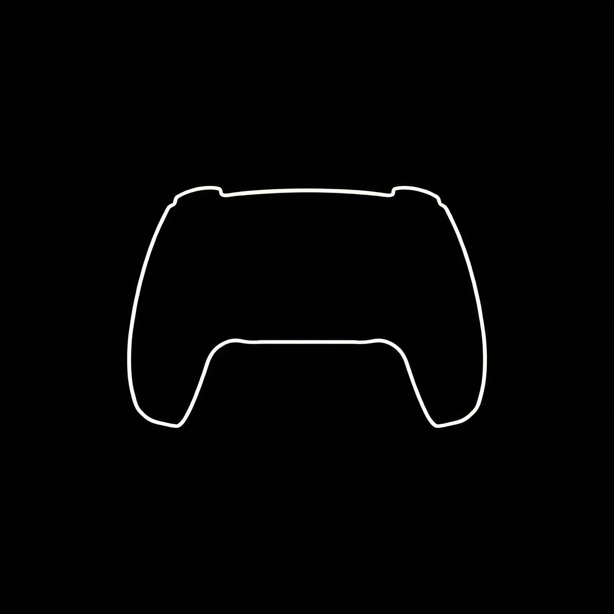

Flow Bedrock¶
This note documents a small ODE-based simulator I built to develop intuition for flow models (continuous normalizing flows / flow matching) and their relationship to diffusion models (typically defined via SDEs).
The simulator evolves many particles \(x(t)\in\mathbb{R}^2\) under a time-dependent velocity field \(v(x,t)\) by numerically integrating the ODE
It is primarily a visualization tool: trajectories and densities make the abstract objects in the math (vector fields, marginals \(p_t\), couplings between \(p_0\) and \(p_1\)) easier to reason about.
GitHub: https://github.com/GDP-lab/flow_bedrock
- Particles as images. In the simulator, each particle is one sample \(x\) (think: one image in pixel/latent space). The animation is the evolution of a population of such samples under an ODE; nothing in the dynamics refers to human-interpretable “parts” of an image.
- Toy shapes as low-dimensional structure. The 2D targets (two moons, ring, S-curve, PS5-like outline) are deliberately chosen to concentrate probability mass near an approximately 1D set in \(\mathbb{R}^2\). The PS5 example keeps a nonzero thickness to make sampling/visualization easier; conceptually it is still “near a curve” rather than filling the plane.
- Analogy to real images. In high-dimensional image spaces, data are widely modeled as lying near a low-dimensional subset (informally, a “data manifold”). Flow/diffusion training learns a vector field (or score/denoiser) that matches the statistics of that distribution; it does not need to explicitly represent what each image “contains”.
- Text-to-image as conditioning. Text-to-image models learn a conditional distribution \(p_{\mathrm{data}}(x\mid c)\) where \(c\) is a text condition/embedding. Conditioning changes the target conditional density over image space (and hence the learned dynamics), which you can view as injecting language-level statistical information that reshapes where trajectories concentrate at \(t=1\).
1. Flow Matching¶
1.1 Hand-Crafted Velocity Fields¶
This section collects three hand-crafted velocity fields \(v(x,t)\) used in the simulator: two_moons, ring, and s_curve. In my implementation, all three live in the same file handcrafted.py.
The system evolution is always the ODE
integrated numerically (e.g. RK4). The “manifold-like” shapes in the particle cloud come from the structure of \(v\):
- a contracting (normal) component that pulls points toward some geometric set (a curve or a ring), and
- a tangential / drift component that moves points along that set (plus small time-varying or bending terms).
The dispatcher is:
def velocity_field(x: torch.Tensor, t: float, condition: str) -> torch.Tensor:
if condition == "two_moons":
return _two_moons(x, t)
if condition == "ring":
return _ring(x, t)
if condition == "s_curve":
return _s_curve(x, t)
return _two_moons(x, t)
Below, I write \(x=(x,y)\in\mathbb{R}^2\) and use the 90° rotation matrix
Two Moons (two_moons)¶
This field projects each point to the nearer of two fixed semicircular arcs (“moons”), pulls it toward that arc, and adds a mild swirl to encourage motion along the arc.
Mathematically, it is well-approximated by
where \(P_{\mathrm{moon}}(x)\) is “project to the nearer moon arc” (the code’s target), \(\alpha=2.1\), and
def _two_moons(x: torch.Tensor, t: float) -> torch.Tensor:
# Project points to canonical two-moons arcs and pull toward them.
theta1 = torch.atan2(x[:, 1], x[:, 0] + 1.0).clamp(0.0, math.pi)
moon1 = torch.stack((-1.0 + torch.cos(theta1), torch.sin(theta1)), dim=1)
theta2 = torch.atan2(-(x[:, 1] + 0.5), -(x[:, 0] - 1.0)).clamp(0.0, math.pi)
moon2 = torch.stack((1.0 - torch.cos(theta2), -torch.sin(theta2) - 0.5), dim=1)
d1 = torch.sum((x - moon1) ** 2, dim=1, keepdim=True)
d2 = torch.sum((x - moon2) ** 2, dim=1, keepdim=True)
target = torch.where(d1 <= d2, moon1, moon2)
pull = (target - x) * 2.1
swirl = torch.stack((-x[:, 1], x[:, 0]), dim=1) * (0.18 + 0.05 * math.sin(2.0 * math.pi * t))
return pull + swirl
Why it yields two “moons”:
- pull is a strong normal contraction onto the arcs (two attraction basins, because of the nearest-arc selection).
- swirl is tangential-ish motion that prevents purely radial collapse and helps spread mass along the arcs.
Ring (ring)¶
This field stabilizes the radius around a (slightly time-varying) target radius and adds a strong tangential rotation.
Let \(r=\|x\|\) and \(r_0(t)=1.7+0.2\sin(2\pi t)\). The vector field is
def _ring(x: torch.Tensor, t: float) -> torch.Tensor:
r = torch.linalg.norm(x, dim=1, keepdim=True).clamp_min(1e-4)
ring_r = 1.7 + 0.2 * math.sin(2.0 * math.pi * t)
radial = (ring_r - r) * (x / r) * 0.8
tangential = torch.stack((-x[:, 1], x[:, 0]), dim=1) * 1.5
return radial + tangential
Why it yields a ring: - the first term is radial negative feedback: if \(r<r_0(t)\) it pushes outward; if \(r>r_0(t)\) it pulls inward. - the second term is (approximately) tangential rotation, which preserves radius and circulates mass along the ring.
S-Curve (s_curve)¶
This field contracts points vertically onto a target graph \(y^\*(x)=\tanh(2.2x)\), adds constant drift in \(x\), and adds a small vertical bending term.
Writing \(x=(x,y)\), the field is
def _s_curve(x: torch.Tensor, _t: float) -> torch.Tensor:
target_y = torch.tanh(2.2 * x[:, 0])
to_curve = torch.stack((torch.zeros_like(target_y), target_y - x[:, 1]), dim=1) * 1.25
drift = torch.tensor([0.35, 0.0], device=x.device, dtype=x.dtype).expand_as(x)
bend = torch.stack((torch.zeros_like(x[:, 0]), torch.sin(2.5 * x[:, 0]) * 0.4), dim=1)
return to_curve + drift + bend
Why it yields an S-shaped “manifold”:
- to_curve is a normal contraction onto the graph \(y=\tanh(2.2x)\).
- drift moves particles forward in \(x\), so they traverse the curve rather than freezing in place.
- bend adds a controlled thickness/shape variation in \(y\) as a function of \(x\).
Why these produce “manifold-like” distributions¶
All three share the same pattern: attraction to a low-dimensional geometric set (a stable curve/ring) plus motion along that set. Under the ODE pushforward, an initial blob (e.g. a Gaussian) is rapidly compressed in the normal directions and stretched/transported tangentially, resulting in particle clouds that concentrate near a 1D shape in \(\mathbb{R}^2\).
1.2 Learned Velocity Fields¶
In the flow_bedrock codebase, the learned mode replaces the hand-crafted \(v(x,t)\) with a neural velocity field \(v_\theta(x,t)\) and then runs the same ODE integrator. Concretely, the code is organized as:
- Model definition + inference wrapper:
learned.py - Training script:
rf_two_moons.py - Target distribution samplers:
target_distributions.py - Simulator mode switch + ODE calls:
state.py - ODE integrators (Euler/RK4):
ode.py
1) What is the model?¶
In learned.py, the model VelocityMLP implements a map
At inference time, the scalar \(t\) is broadcast to shape \([N,1]\) to match a batch of \(N\) particles, and wrapped with \(t\mapsto t\bmod 1\) to keep it in \([0,1)\).
2) How is it trained?¶
The training in rf_two_moons.py is “RF-style” straight-line supervision:
- sample \(x_0\sim\mathcal{N}(0,I)\) (Gaussian source),
- sample \(x_1\sim p_{\mathrm{data}}\) using
target_distributions.py, - sample \(t\sim\mathrm{Unif}[0,1]\),
- define the bridge point \(x_t=(1-t)x_0+t x_1\),
- set the target velocity \(v_{\mathrm{target}} = x_1-x_0\) (constant along the line).

The figure above shows what the target samples \(x_1\sim p_{\mathrm{data}}\) look like in practice (i.e. the distribution that the model is trained to transport to).
Then \(\theta\) is fit by mean-squared error
where the expectation is over the sampling procedure above.
3) How is the checkpoint loaded?¶
The backend route POST /model/load in app.py dispatches into state.py, which calls the LearnedField.load(...) wrapper in learned.py to construct the MLP (with the saved hyperparameters such as width/depth), load the state_dict, and set eval() mode.
4) How is learned used in the simulator loop?¶
Each simulation tick in state.py selects a velocity function based on the current mode. If mode=learned and a checkpoint has been loaded, it uses the learned field \(v_\theta(x,t)\); otherwise it falls back to handcrafted.py. Either way, the state is advanced by the shared ODE integrators in ode.py by stepping
with the chosen solver (Euler/RK4).